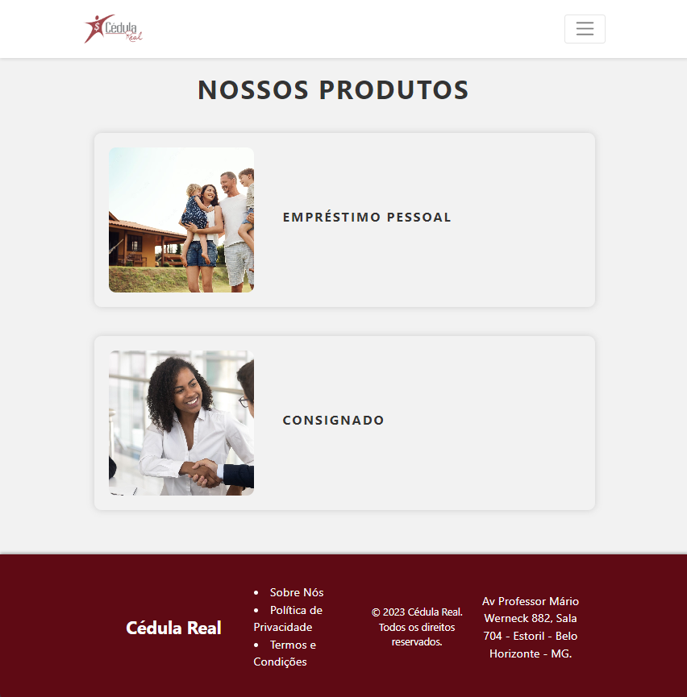
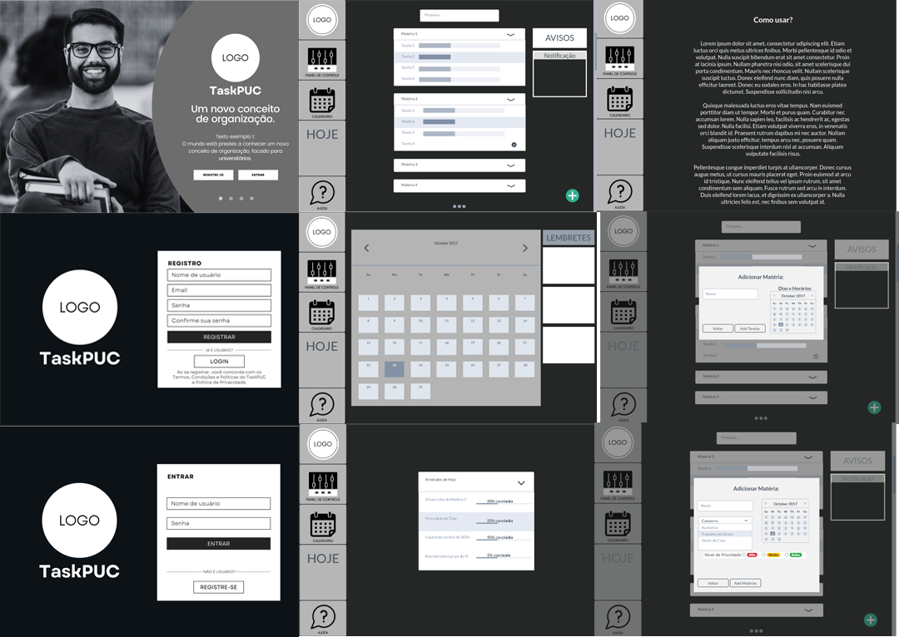
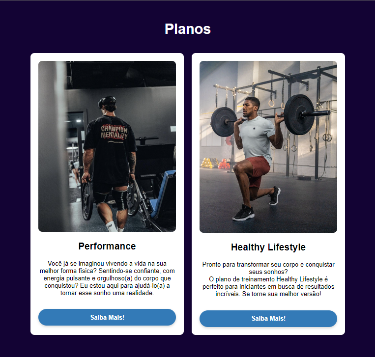

Projetos
-

Plataforma Web para Cedula Real
Plataforma web desenvolvida em HTML/CSS/JavaScript
Cédula Real se caracteriza como prestador de serviços dos Bancos e financeiras na condição de correspondente, na forma da resolução 3954 do Banco Central do Brasil e suas atualizações, habilitada a prestar os serviços de recepção e encaminhamento de propostas de empréstimos, financiamentos e cartões de crédito. A Cédula Real tem como missão facilitar o acesso ao crédito, sempre com transparência, agilidade e confiabilidade, proporcionando soluções financeiras adequadas a cada perfil de cliente. A marca se mantém presente no mercado a 17 anos e sempre com o compromisso ético, através do qual, procuramos nos orientar e fundamentar nossa Empresa, correspondentes e funcionários.
-

Como Criar Bons Hábitos
O projeto tem como objetivo facilitar o aprendizado e organização da rotina estudantil, sabemos o quão puxada a rotina de estudos pode ser, e para isso buscamos desenvolver uma plataforma que irá auxiliar na rotina e organização para melhor aprendizado. Objetivos específicos : Ajudar o estudante a se organizar melhor com seus horarios. Desenvolver uma agenda virtual com lembretes e dicas. Montar uma rotina e plano de estudo para o aluno. Ajudar o estudante a se preparar de forma constante nos estudos, tornando a rotina constante, pórem leve. Disciplina do aluno nos momentos de estudo com um cronograma único.
-

Plataforma Web para Personal Trainer
WebSite desenvolvido em HTML/CSS-BootStrap
Plataforma para vendas de planos de consultoria esportiva desenvolvido em ReactJS
Bruno Tupy é Personal Trainer e vende seus planos de forma muito mais tecnológica que seus concorrentes. Tendo para si um WebSite de apresentação de seus produtos e vendas! -

Calculadora Automática para Dietas Nutricionais
Software desenvolvido em C++
O Software contém 5 um menu com 5 diferentes calculadoras de calorias e macros-nutrientes para dietas nutricionais